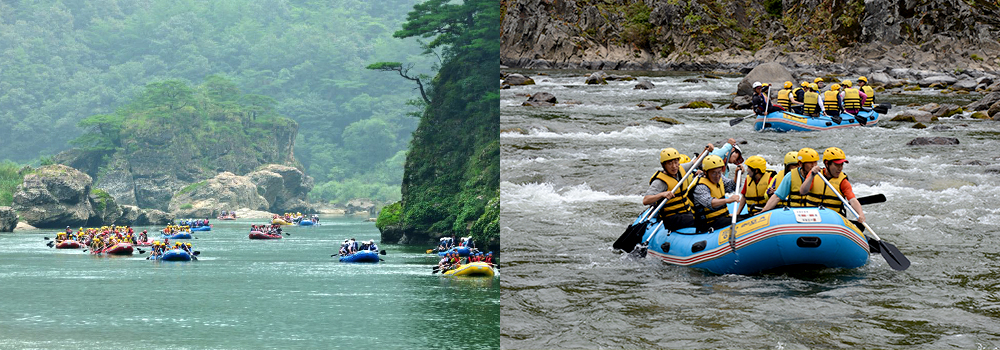

와 제 롤모델이 잡스에요!!! 아이폰 첫 출시되고 나서부터 계속 아이폰 쓰고 있는데 잡스가 너무 그리워요ㅠㅠ 지금은 돈만 벌려고 하는 것 같아서 디자인 발전도 없고ㅠㅠ와 제 롤모델이 잡스에요!!! 아이폰 첫 출시되고 나서부터 계속 아이폰 쓰고 있는데 잡스가 너무 그리워요ㅠㅠ 지금은 돈만 벌려고 하는 것 같아서 디자인 발전도 없고ㅠㅠ와 제 롤모델이 잡스에요!!! 아이폰 첫 출시되고 나서부터 계속 아이폰 쓰고 있는데 잡스가 너무 그리워요ㅠㅠ 지금은 돈만 벌려고 하는 것 같아서 디자인 발전도 없고ㅠㅠ와 제 롤모델이 잡스에요!!! 아이폰 첫 출시되고 나서부터 계속 아이폰 쓰고 있는데 잡스가 너무 그리워요ㅠㅠ 지금은 돈만 벌려고 하는 것 같아서 디자인 발전도 없고ㅠㅠ와 제 롤모델이 잡스에요!!! 아이폰 첫 출시되고 나서부터 계속 아이폰 쓰고 있는데 잡스가 너무 그리워요ㅠㅠ 지금은 돈만 벌려고 하는 것 같아서 디자인 발전도 없고ㅠㅠ
여행에 빠지다
8월에 떠나기 좋은 국내 여행지 추천
평창 백운산과 백룡동굴
수은주가 40도를 오르내리는 요즘 인파가 북적이는 피서지로 떠나고픈 사람은 없을 것이다. 그래서 여행기자들이 가장 많이 받는 질문 중 하나가 “어디 사람 없고, 경치 좋은 데 없느냐?” 라는 질문이다. 단언컨대 국토 면적이 손바닥만 한 대한민국에 그런 곳은 없다. 경치가 좋은 곳은 일반에 알려졌고, 그런 곳은 예외 없이 바글거린다. 그래도 그중 덜한 곳을 추천하라고 한다면, 강원도 평창군이다.
글
우현석(서울경제신문 객원기자 겸 여행 작가)
사진
평창군청 제공
-
“지난 동계 올림픽으로 이미 세계에 알려진 평창에 그런 곳이 있느냐?”라고 되묻는 사람이 있을지 모르겠으나, 강원도에는 인적이 드문 여행지가 아직 몇 곳은 남아있다. 평창군 미탄면 마하리 문희마을도 그런 곳 중 하나인데, 그렇다고 첩첩산중 오지는 아니다. 이 곳에는 절대 고독을 느껴볼 수 있는 산과 동굴이 있다. 왜 절대 고독이냐고? 이제부터 그에 관한 설명이다.
우선 백운산은 정상까지 높이가 883m에 불과하다. 정상까지 오를 땐 산책하는 기분마저 든다. 그래서 필자도 칠족령전망대까지 편한 길로 가서 운해를 찍고 내려올 작정이었다. 전날 일행과 ‘백운산 정상까지 오를 것인지’에 대해 의논을 했었지만 당일 아침 ‘산이 험하니 길이 좋은 전망대까지만 오르자’고 의견을 모았다. 그런 상황에서 전망대로 가는 길을 800m정도 지나쳐 더 오르고 말았다. 800m를 더 걸은 게 아까웠다. 그래서 일행은 백운산 정상까지 오르기로 했다. 가파른 길을 택하면 1.2km, 평탄한 길을 택하면 3.2km로 정상까지 오르는 것은 어려워 보이지 않았다. 오르는 길은 경사가 급하기는 했지만 그런대로 걸을 만했다.
하지만 하산 길은 딴판이었다. 정상까지 오르는데 1시간 반이면 족했는데, 내려올 때는 무려 3시간 반이나 걸렸다. 올라가는 시간보다 내려오는 시간이 더 걸린다는 사실 하나만으로도 산세의 험준함을 알 수 있는 셈이다. 하산 코스가 긴 탓도 있지만 등산로에 칼날 같은 바위가 솟아 있고, 무려 여섯 개의 봉우리를 넘어야 하는 데다 바위 사이에는 물에 젖은 진흙이 똬리를 틀고 있어 잘못 밟으면 여지없이 미끄러져 한 발 한 발 조심스레 발걸음을 떼어야 한다.
하산길 내내 왼쪽으로는 직벽의 낭떠러지 너머로 동강이 흐르고, 그 경계에는 ‘추락 위험’이라는 표지판이 걸린 밧줄이 처져있어 긴장감을 더한다. 고생 끝에 내려와 읽은 산행정보에도 ‘백운산은 등산로가 매우 험한 편’이라고 나온다. 급경사 구간이 많고 등산로가 동강 쪽 벼랑 끝으로 아슬아슬하게 이어지는 구간이 많아 위험하므로 초보자는 단독 산행을 삼가는 것이 좋고, 악천후에는 산행을 피하는 것이 좋다’고 적혀 있었다.
-
TIP추천 등반 코스
문희마을 → 갈림길 → 능선갈림길 → 삼거리 → 정상 → 살개목재 → 칠족령 → 성터(돌탑) → 문희마을
(6.1km, 약 4시간 30분 소요) -
백운산
백운산은 흰구름이 늘 끼여 있다고 하여 백운산이라고 부르게 되었다고 전해지며, 동강이 산자락을 굽이굽이 감싸고 흐르므로 경관이 아름답고 조망이 좋다.
이곳까지 왔다면 등산 후에 반드시 가봐야 할 곳이 있다. 다름 아닌 산 아래 백룡동굴이다. 백룡동굴은 백운산 아래에 동강 쪽으로 난 자연동굴인데 데크길로 갈 수도 있지만 배를 타고 가는 편이 훨씬 빠르다. 동굴 탐험을 추천하는 이유는 중국 여행이나 제주도에 가서 볼 수 있는 동굴들과는 격이 다르기 때문이다. 이 동굴로 들어가면 채 200m를 들어가지 않아 절대 암흑을 체험할 수 있다. 대략 500~600m의 동굴을 탐험하는데, 내부에는 아무런 인공적인 시설이 없어, 울긋불긋 호떡집에 불 난 것처럼 전구로 장식을 해 놓은 중국 장가계의 동굴과는 품격부터가 다르다.
-
백룡동굴
원형보존이 잘 되어 있어 때 묻지 않은 자연 동굴의 제 모습을 확인할 수 있다.
빛이 없는 동굴에는 작은 새우나 물고기들이 웅덩이에 서식하고 있는데 빛이 없다 보니 눈이 퇴화되어 없는 것이 이채롭다. 들어가기 전에는 고무로 만든 상하의를 입고 헬멧을 쓰고, 헤드랜턴을 장착해야 한다. 동굴 밖으로 나오면 멀지 않은 곳에서 래프팅 체험을 할 수 있고, 동강에선 플라이낚시도 즐길 수 있다. 민박이나 펜션도 있어 숙박도 가능하다. 가는 길에는 평창의 명물인 송어횟집도 곳곳에 있어 나그네의 입맛을 다시게 한다.
-

동강 래프팅
동강 래프팅은 주변 환경 또한 아름다워 우리나라에서 3대 래프팅지로 손꼽히고 있다.
TIP서울에서 찾아가는 방법
-

 무궁화호 청량리역 → 영월역 (약 2시간 20분 소요)
무궁화호 청량리역 → 영월역 (약 2시간 20분 소요) -

 고속버스 서울고속버스터미널 → 영월시외버스터미널(2시간 30분 소요)
고속버스 서울고속버스터미널 → 영월시외버스터미널(2시간 30분 소요) -

 자동차 성남이천로 → 광주원주고속도로 → 서동로 (약 4시간 소요)
자동차 성남이천로 → 광주원주고속도로 → 서동로 (약 4시간 소요)
-
최고예요
322
-
좋아요
322
-
슬퍼요
322
-
그저 그래요
322
-
화나요
322